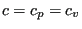
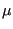
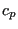
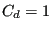

Next: Pipe, Manning Up: Theory Previous: Network User Element Contents
A network element is characterized by a type of fluid section. It has to be specified on the *FLUID SECTION card unless the analysis is a pure thermomechanical calculation.
Typical material properties needed for a liquid network are the density   (temperature dependent, cf. the *DENSITY card), the
heat capacity
(temperature dependent, cf. the *DENSITY card), the
heat capacity
A special case is the purely thermal liquid network. This applies if:

is needed.
For liquids the orifice (only
for 